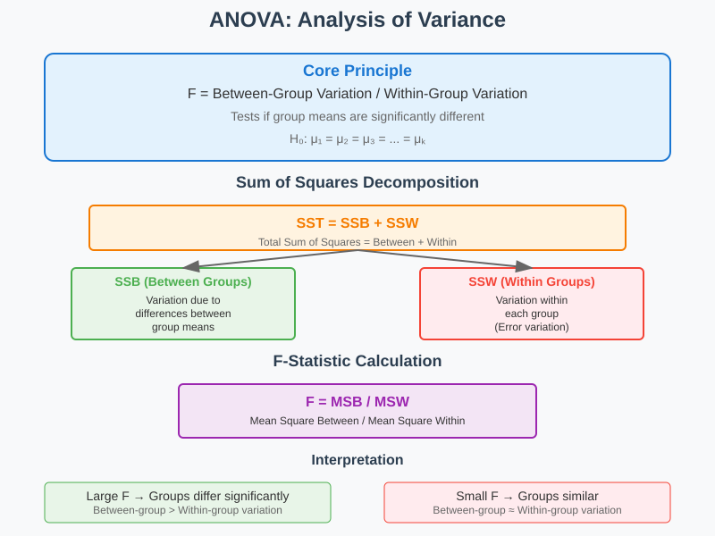
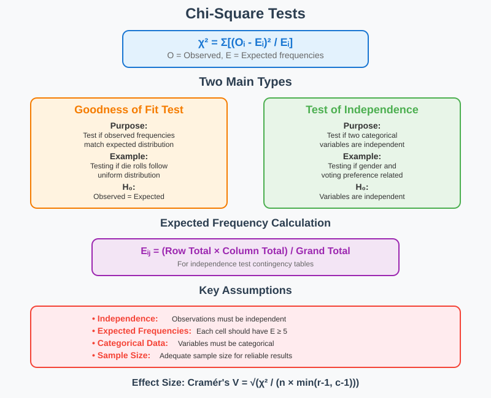
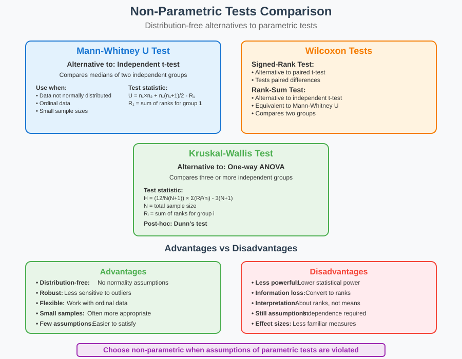
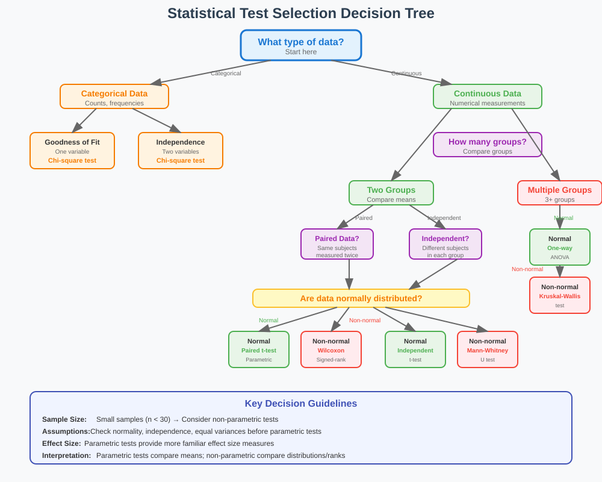

Statistical Inference Extensions
📚 Quick Navigation
- ANOVA (Analysis of Variance)
- Chi-Square Tests
- Non-Parametric Tests
- Choosing the Right Test
- Practical Examples
- References & Further Reading
🔬 ANOVA (Analysis of Variance)
ANOVA is a statistical method used to analyze the differences among group means in a sample. It extends the t-test to compare more than two groups simultaneously.

Core Concepts
Key Principles:
- Between-Group Variation: Variation due to differences between group means
- Within-Group Variation: Variation within each group (error variation)
- F-Statistic: Ratio of between-group to within-group variation
- Null Hypothesis: All group means are equal (μ₁ = μ₂ = μ₃ = ... = μₖ)
Types of ANOVA
One-Way ANOVA:
- Purpose: Compare means across one categorical variable
- Example: Testing if mean scores differ across three teaching methods
- Assumptions: Normality, independence, equal variances
Two-Way ANOVA:
- Purpose: Compare means across two categorical variables
- Example: Testing effects of both teaching method AND class size on scores
- Benefits: Can detect interaction effects between factors
Repeated Measures ANOVA:
- Purpose: Compare means when same subjects measured multiple times
- Example: Testing drug effectiveness at different time points
- Advantage: Controls for individual differences
Mathematical Foundation
F-Statistic Formula:
F = MSB / MSW
Where:
- MSB = Mean Square Between groups
- MSW = Mean Square Within groups
Sum of Squares Decomposition:
SST = SSB + SSW
Where:
- SST = Total Sum of Squares
- SSB = Sum of Squares Between groups
- SSW = Sum of Squares Within groups
Degrees of Freedom:
- df_between = k - 1 (where k = number of groups)
- df_within = N - k (where N = total sample size)
- df_total = N - 1
Post-Hoc Tests
When to Use:
- After finding significant F-test result
- To determine which specific groups differ
- Control for multiple comparisons problem
Common Methods:
- Tukey's HSD: Controls family-wise error rate
- Bonferroni: Conservative approach, divides α by number of comparisons
- Scheffé: Most conservative, good for complex contrasts
📊 Chi-Square Tests
Chi-square tests are non-parametric tests used to examine relationships between categorical variables or test goodness of fit.

Types of Chi-Square Tests
Goodness of Fit Test:
- Purpose: Test if observed frequencies match expected distribution
- Example: Testing if die rolls follow uniform distribution
- Null Hypothesis: Observed frequencies = Expected frequencies
Test of Independence:
- Purpose: Test if two categorical variables are independent
- Example: Testing if gender and voting preference are related
- Null Hypothesis: Variables are independent
Mathematical Foundation
Chi-Square Statistic:
χ² = Σ[(Oᵢ - Eᵢ)² / Eᵢ]
Where:
- Oᵢ = Observed frequency in category i
- Eᵢ = Expected frequency in category i
Expected Frequencies (Independence Test):
Eᵢⱼ = (Row Total × Column Total) / Grand Total
Assumptions and Requirements
Critical Assumptions:
- Independence: Observations must be independent
- Expected Frequencies: Each cell should have expected frequency ≥ 5
- Sample Size: Adequate sample size for reliable results
- Categorical Data: Variables must be categorical (not continuous)
When Assumptions Violated:
- Fisher's Exact Test: For 2×2 tables with small expected frequencies
- Monte Carlo Methods: For larger tables with small expected frequencies
- Combine Categories: Merge categories to increase expected frequencies
Effect Size Measures
Cramér's V:
V = √(χ² / (n × min(r-1, c-1)))
Where:
- n = sample size
- r = number of rows
- c = number of columns
Interpretation Guidelines:
- Small effect: V ≈ 0.1
- Medium effect: V ≈ 0.3
- Large effect: V ≈ 0.5
🔄 Non-Parametric Tests
Non-parametric tests make fewer assumptions about data distribution and are robust alternatives to parametric tests.

Mann-Whitney U Test
Purpose and Applications:
- Alternative to: Independent samples t-test
- Use When: Data not normally distributed or ordinal
- Compares: Medians of two independent groups
- Example: Comparing satisfaction ratings between two products
Test Statistic:
U = n₁ × n₂ + n₁(n₁ + 1)/2 - R₁
Where:
- n₁, n₂ = sample sizes
- R₁ = sum of ranks for group 1
Assumptions:
- Independence: Observations are independent
- Ordinal Data: At least ordinal level measurement
- Shape: Similar distribution shapes (for median comparison)
Wilcoxon Tests
Wilcoxon Signed-Rank Test:
- Alternative to: Paired samples t-test
- Use When: Testing differences in paired observations
- Example: Before/after treatment comparisons
- Tests: Whether median difference equals zero
Wilcoxon Rank-Sum Test:
- Alternative to: Independent samples t-test
- Use When: Comparing two independent groups
- Note: Equivalent to Mann-Whitney U test
- Tests: Whether two groups have same distribution
Kruskal-Wallis Test
Purpose and Applications:
- Alternative to: One-way ANOVA
- Use When: Comparing more than two independent groups
- Example: Comparing customer satisfaction across multiple stores
- Tests: Whether groups come from same distribution
Test Statistic:
H = (12/N(N+1)) × Σ(Rᵢ²/nᵢ) - 3(N+1)
Where:
- N = total sample size
- Rᵢ = sum of ranks for group i
- nᵢ = sample size for group i
Post-Hoc Analysis:
- Dunn's Test: Pairwise comparisons after significant Kruskal-Wallis
- Controls: Multiple comparison error rates
- Alternative: Multiple Mann-Whitney tests with Bonferroni correction
Advantages and Limitations
Advantages:
- Distribution-Free: No normality assumptions
- Robust: Less sensitive to outliers
- Flexible: Work with ordinal and continuous data
- Small Samples: Often more appropriate for small sample sizes
Limitations:
- Less Powerful: Generally less statistical power than parametric tests
- Information Loss: Convert data to ranks, losing some information
- Interpretation: Results about ranks/distributions, not means
- Assumptions: Still have assumptions (independence, similar shapes)
🎯 Choosing the Right Test
Selecting the appropriate statistical test is crucial for valid inference. Consider data type, distribution, sample size, and research question.

Decision Framework
Step 1: Data Type Assessment
- Categorical Data: Chi-square tests, Fisher's exact test
- Continuous Data: t-tests, ANOVA, non-parametric alternatives
- Ordinal Data: Non-parametric tests preferred
- Mixed Types: Consider transformations or specialized methods
Step 2: Distribution Checking
- Normal Distribution: Parametric tests (t-test, ANOVA)
- Non-Normal Distribution: Non-parametric alternatives
- Unknown Distribution: Use normality tests or visual inspection
- Small Samples: Non-parametric often safer choice
Step 3: Number of Groups
- Two Groups: t-test or Mann-Whitney U
- Multiple Groups: ANOVA or Kruskal-Wallis
- Paired Data: Paired t-test or Wilcoxon signed-rank
- Independent Groups: Independent samples tests
Comparison Table
| Research Question | Parametric Test | Non-Parametric Alternative | Requirements |
|---|---|---|---|
| Compare 2 independent groups | Independent t-test | Mann-Whitney U | Independence, normality (parametric) |
| Compare 2 paired groups | Paired t-test | Wilcoxon signed-rank | Paired data, normality (parametric) |
| Compare 3+ independent groups | One-way ANOVA | Kruskal-Wallis | Independence, normality (parametric) |
| Test categorical associations | N/A | Chi-square test | Categorical data, adequate cell counts |
| Compare group proportions | Z-test for proportions | Fisher's exact test | Large samples (parametric) |
Power Considerations
Parametric Tests:
- Higher Power: When assumptions met
- Efficiency: Better use of data information
- Precision: More precise estimates
- Sample Size: Generally require smaller samples
Non-Parametric Tests:
- Robust Power: Consistent across conditions
- Assumption-Free: Power not affected by violations
- Safety: Conservative approach when unsure
- Large Samples: Approach parametric power with large n
💻 Practical Examples
Example 1: One-Way ANOVA
Research Question: Do three different fertilizers produce different crop yields?
import numpy as np
import scipy.stats as stats
from scipy.stats import f_oneway
import pandas as pd
# Sample data
fertilizer_a = [23, 25, 27, 24, 26]
fertilizer_b = [20, 22, 21, 23, 19]
fertilizer_c = [28, 30, 29, 31, 27]
# Perform one-way ANOVA
f_stat, p_value = f_oneway(fertilizer_a, fertilizer_b, fertilizer_c)
print(f"F-statistic: {f_stat:.4f}")
print(f"P-value: {p_value:.4f}")
# Post-hoc analysis if significant
if p_value < 0.05:
print("Significant difference found - conduct post-hoc tests")
Example 2: Chi-Square Test of Independence
Research Question: Is there an association between education level and job satisfaction?
import numpy as np
from scipy.stats import chi2_contingency
# Contingency table
observed = np.array([[15, 25, 10], # High school
[30, 35, 15], # College
[20, 40, 25]]) # Graduate
# Perform chi-square test
chi2, p_value, dof, expected = chi2_contingency(observed)
print(f"Chi-square statistic: {chi2:.4f}")
print(f"P-value: {p_value:.4f}")
print(f"Degrees of freedom: {dof}")
# Calculate Cramér's V
n = observed.sum()
cramer_v = np.sqrt(chi2 / (n * min(observed.shape) - 1))
print(f"Cramér's V: {cramer_v:.4f}")
Example 3: Mann-Whitney U Test
Research Question: Do two teaching methods produce different test scores?
from scipy.stats import mannwhitneyu
# Sample data
method_1 = [78, 82, 85, 79, 88, 76, 83]
method_2 = [72, 75, 74, 71, 77, 73, 76]
# Perform Mann-Whitney U test
statistic, p_value = mannwhitneyu(method_1, method_2, alternative='two-sided')
print(f"U-statistic: {statistic}")
print(f"P-value: {p_value:.4f}")
# Effect size (rank biserial correlation)
n1, n2 = len(method_1), len(method_2)
r = 1 - (2 * statistic) / (n1 * n2)
print(f"Effect size (r): {r:.4f}")
🚀 Google Colab Integration

Interactive Notebooks:
- ANOVA Tutorial: Complete guide with real data examples
- Chi-Square Analysis: Step-by-step categorical data analysis
- Non-Parametric Methods: Comprehensive comparison study
- Test Selection Guide: Interactive decision tree implementation
📚 References & Further Reading
Essential Resources
Textbooks:
- "Applied Statistics and Probability for Engineers" by Montgomery & Runger - Comprehensive coverage of ANOVA and non-parametric methods
- "Practical Statistics for Data Scientists" by Bruce & Bruce - Modern approach to statistical inference
- "The Elements of Statistical Learning" by Hastie, Tibshirani & Friedman - Advanced statistical methods
Research Papers:
- "A Study of the Power of the Wilcoxon Test" (1949) - Original power analysis of non-parametric tests
- "Multiple Comparisons in ANOVA" by Hochberg & Tamhane - Comprehensive review of post-hoc procedures
- "Effect Size Measures for Chi-Square Tests" by Cohen (1988) - Guidelines for interpreting effect sizes
Online Resources:
- Khan Academy Statistics: Interactive lessons on ANOVA and chi-square tests
- Scipy Documentation: Complete reference for statistical functions
- CrossValidated (Stack Exchange): Community Q&A for statistical questions
🤗 Related Models and Tools
Hugging Face Models:
- Statistical Analysis Transformers: Models for automated statistical test selection
- Data Distribution Classifiers: Pre-trained models for normality assessment
ArXiv Papers:
- "Modern Approaches to Multiple Testing" (arXiv:2008.00098) - Recent advances in multiple comparison procedures
- "Non-Parametric Methods in Machine Learning" (arXiv:1906.04032) - Integration of classical and modern approaches